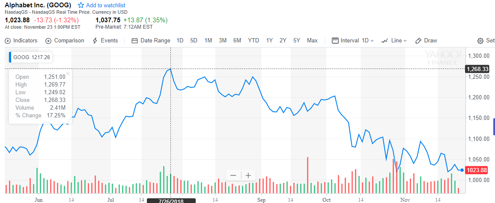

Dự đoán chứng khoán sử dụng tensorflow
-

Ở bài viết này, chúng ta đề cập đến vấn đề sử dụng tensorflow để dự đoán chỉ số S&P 500.
Lời mở đầu
Ở bài viết này, mình sẽ xây dựng mô hình hơn giản để áp dụng vào tập dữ liệu giá chứng khoán. Mục tiêu của bài này là chúng ta sẽ dự đoán chỉ số S&P 500 dựa trên chỉ số của 500 mã chứng khoán. Các bạn có nhu cầu tìm hiểu thêm về chỉ số sp 500 có thể đọc thêm ở https://vi.wikipedia.org/wiki/S%26P_500. Đây là một ứng dụng nhỏ, không có ý nghĩa nhiều ở thực tế do khi phân tích chứng khoán, ta còn xét thêm rất nhiều yếu tố phụ nữa. Mô hình này thực chất chỉ là một trong những mô hình chơi chơi.
Dẫn nhập
Phân tích dữ liệu
Các bạn có thể download dữ liệu ở https://drive.google.com/open?id=1UTlj5Ced-yj6RBRVc6bBM6IWMjfQR3GR.
Đầu tiên, chúng ta sẽ dùng pandas để load mô hình lên:
import pandas as pd
# Import data
data = pd.read_csv('data_stocks.csv')
Xem kích thước của dữ liệu:
print(data.shape)
(41266, 502)
Kết quả là ta có hơn 40 ngàn dòng và 502 cột. Thử show 10 row đầu tiên của dữ liệu lên xem như thế nào.
print(data.head())
DATE SP500 NASDAQ.AAL NASDAQ.AAPL NASDAQ.ADBE NASDAQ.ADI \
0 1491226200 2363.6101 42.3300 143.6800 129.6300 82.040
1 1491226260 2364.1001 42.3600 143.7000 130.3200 82.080
2 1491226320 2362.6799 42.3100 143.6901 130.2250 82.030
3 1491226380 2364.3101 42.3700 143.6400 130.0729 82.000
4 1491226440 2364.8501 42.5378 143.6600 129.8800 82.035
NASDAQ.ADP NASDAQ.ADSK NASDAQ.AKAM NASDAQ.ALXN ... NYSE.WYN \
0 102.2300 85.2200 59.760 121.52 ... 84.370
1 102.1400 85.6500 59.840 121.48 ... 84.370
2 102.2125 85.5100 59.795 121.93 ... 84.585
3 102.1400 85.4872 59.620 121.44 ... 84.460
4 102.0600 85.7001 59.620 121.60 ... 84.470
NYSE.XEC NYSE.XEL NYSE.XL NYSE.XOM NYSE.XRX NYSE.XYL NYSE.YUM \
0 119.035 44.40 39.88 82.03 7.36 50.22 63.86
1 119.035 44.11 39.88 82.03 7.38 50.22 63.74
2 119.260 44.09 39.98 82.02 7.36 50.12 63.75
3 119.260 44.25 39.99 82.02 7.35 50.16 63.88
4 119.610 44.11 39.96 82.03 7.36 50.20 63.91
NYSE.ZBH NYSE.ZTS
0 122.000 53.350
1 121.770 53.350
2 121.700 53.365
3 121.700 53.380
4 121.695 53.240
Cột đầu tiên là ngày, sau đó là mã chứng khoán. Chúng ta có tổng cộng 500 mã chứng khoán và 1 chỉ số. Để ý cột Date, ta thấy giá trị đầu tiên là 1491226200, giá trị thứ 2 là 1491226260, giá trị thứ 3 là 1491226320, mỗi giá trị cách nhau 60. Chuyển đổi số 1491226200 sang dạng datetime thì ra giá trị Monday, April 3, 2017 1:30:00 PM giờ GMT, tương tự số 1491226260 ra Monday, April 3, 2017 1:31:00 PM giờ GMT. Ta có thể suy luận ra là giá trị giao dịch lưu theo từng phút một (khoảng interval là 60 giây), và dữ liệu chúng ta có bắt đầu vào 3 tháng 4 năm 2017.
Plot đồ thị của mã SP500 lên:
import matplotlib.pyplot as plt
plt.plot(data['SP500'])
plt.show()

Notes: Ở đây có một lưu ý nhỏ nhưng rất quan trọng. Đó là tại thời điểm phút thứ t lưu trữ giá trị sp500 của thời điểm phút thứ t+1. Ví dụ với chỉ số sp500, dòng đầu tiên ta thấy là 1491226200 2363.6101, nghĩa là giá thực tế của thời điểm 1491226260 là 2363.6101. Do bài toán của chúng ta là dữ đoán giá tương lại, nên tại thời điểm hiện tại ta sẽ dự đoán giá 1 phút sau sẽ bằng bao nhiêu. Và tập dữ liệu đã tự động dịch chuyển giá trị lên 1 phút cho chúng ta đỡ mất công làm. Còn giá của 500 cỗ phiếu còn lại vẫn là giá tại thời điểm t
Phân chia tập train và test.
Chúng ta sẽ chia dữ liệu thành 2 phần với 80% là train và 20% còn lại là test. Do tích chất của dữ liệu là time serial nên chúng ta không thể làm thay đổi thứ tự dữ liệu.
Chúng ta sẽ bỏ đi cột DATE đầu tiên, và sau đó chuyển dữ liệu về dạng numpy array để dễ dàng thực hiện các phép chuyển đổi.
data_ = data_raw.drop(['DATE'], 1)
data = data_.values
# Training and test data
train_start = 0
train_end = int(np.floor(0.8*n))
test_start = train_end
test_end = n
data_train = data[ :train_end]
data_test = data[train_end:]
Scale dữ liệu
Khi sử dụng ANN, chúng ta thông thường sẽ scale dữ liệu input về đoạn [-1,1]. Trong python, thư viện sklearn đã hỗ trợ cho chúng ta sẵn các hàm scale dữ liệu cần thiết.
# Scale data
from sklearn.preprocessing import MinMaxScaler
scaler = MinMaxScaler()
data_train = scaler.fit_transform(data_train)
data_test = scaler.transform(data_test)
# Build X and y
X_train = data_train[:, 1:]
y_train = data_train[:, 0]
X_test = data_test[:, 1:]
y_test = data_test[:, 0]
Mình cần dự đoán giá trị của chỉ số sp 500, nên giá trị của sp500 sẽ là cái mình cần dự đoán, chính là cột đầu tiên, còn 500 cái còn lại là input của mình.
Xây dựng mô hình sử dụng keras
Ở đây mình sử dụng keras xây dựng mô hình ANN. Mô hình của mình xây dựng gồm
from keras.models import Sequential
from keras.layers.core import Dense, Dropout, Activation
from keras.callbacks import ModelCheckpoint
from keras.optimizers import SGD
import os
os.environ["CUDA_DEVICE_ORDER"]="PCI_BUS_ID"
# The GPU id to use, usually either "0" or "1"
os.environ["CUDA_VISIBLE_DEVICES"]="0"
# create model
model = Sequential()
model.add(Dense(2048, input_dim=input_dim,kernel_initializer='normal', activation='relu'))
model.add(Dense(1024,kernel_initializer='normal', activation='relu'))
model.add(Dense(512,kernel_initializer='normal', activation='relu'))
model.add(Dense(256,kernel_initializer='normal', activation='relu'))
model.add(Dense(128,kernel_initializer='normal', activation='relu'))
model.add(Dense(1,kernel_initializer='normal'))
model.compile(loss='mse', optimizer='rmsprop')
checkpoint = ModelCheckpoint(filepath='my_model3.h5', verbose=1, save_best_only=True)
model.fit(X_train, y_train, epochs=100, batch_size=256, verbose=1, callbacks=[checkpoint], validation_split=0.2)
Sau một thời gian chạy, mình cũng thu được model. Các bạn quan tâm có thể download model của mình huấn luyện được tại https://drive.google.com/open?id=1BLQZbcADfnLqzIHlkgpsqZBlhljBp1Eb . Tiến hành plot dữ liệu tập test lên xem kết quả như thế nào.
yhat = model.predict(X_test)
x = np.arange(len(yhat))
plt.plot(x, y_test)
plt.plot(x, yhat)
plt.legend(['real', 'test'], loc='upper right')
plt.show()
from sklearn.metrics import mean_squared_error
print("mse: "+ str(mean_squared_error(y_test, yhat)))

mse: 0.0014582120695331884
Kết quả của mô hình tạm chấp nhận được, về hình dạng thì khá tương đồng với kết quả. Chúng ta có thể cải tiến model bằng cách nâng số lượng layter/ hidden node, hoặc thêm dropout. Hoặc có thể thay thế mô hình bằng RNN. Chúng ta sẽ đề cập đến mô hình RNN trong bài viết sau.
Cảm ơn các bạn đã theo dõi. Hẹn gặp bạn ở các bài viết tiếp theo.
Bài viết khác